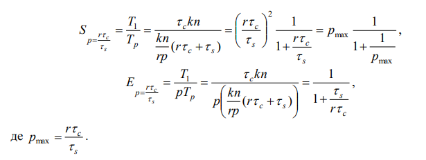

1. Етапи розробки паралельних алгоритмів
Найважливішим та найважчим етапом при створенні паралельної програми є розробка паралельного алгоритму. Даний алгоритм повинен ефективно використовувати паралельну обчислювальну систему та передбачати гарну масштабованість, чого досягти не так просто.
Виділяють чотири основних етапи розробки паралельних алгоритмів
- Декомпозиція – розбиття задачі на підзадачі, які можуть виконуватися одночасно і незалежно одна від одної.
- Проектування комунікацій – встановлення зв’язків між підзадачами.
- Масштабування – об’єднання дрібнозернистих підзадач в більші блоки для зменшення комунікаційних витрат.
- Планування обчислень – розподіл підзадач між процесорами.
- Декомпозиція. Виділяють дві стратегії декомпозиції.
- Декомпозиція по даним – спочатку сегментуються дані, а потім алгоритм їх обробки. Дані розбиваються на сегменти приблизно однакового розміру. Підзадачі формуються з фрагментів даних. З кожним фрагментом даних пов’язуються операції їх обробки. Визначаються необхідні правила обміну даними. Перекриття частин, на які розбивається задача, повинне бути мінімальним, щоб уникнути дублювання обчислень. При декомпозиції даних спочатку аналізуються структури даних найбільшого розміру, або ті, до яких найчастіше звертаються.
- Функціональна декомпозиції – спочатку сегментується обчислювальний алгоритм, а потім під цю схему підбирається схема декомпозиції даних. У цьому випадку схема може вимагати багатьох додаткових пересилань даних. Цей метод корисний, коли немає структур даних, які б могли бути розпаралелені очевидним чином.
- кількість підзадач повинна бути принаймні на порядок вищою за кількість процесорів паралельної системи;
- перетин підзазач повинен бути зведений до мінімуму, щоб уникнути дублювання обчислень;
- декомпозиція повинна бути такою, щоб при збільшенні розміру задачі, збільшувалася кількість підзадач, а не розміри кожної підзадачі;
- підзадачі повинні бути приблизно однакового розміру, щоб забезпечити збалансованість завантаження процесора;
Паралельна програма може складатися з блоків різного розміру. В залежності від розміру блоків, алгоритм може мати різну зернистість. У найпростішому випадку – це кількість операцій у блоці. Виділяють три степені зернистості, які пов’язані з рівнем паралелізму.
Якщо в алгоритмі можна виділити підзадачі, в яких виконується лише декілька операцій, то говорять про дрібнозернистий паралелізм. Це паралелізм на рівні команд та на рівні циклів. Паралелізм на рівні команд має масштаб менше ніж 20 команд на блок, а кількість підзадач, що виконуються паралельно – від однієї до кількох тисяч, при чому середній масштаб паралелізму складає біля п’яти команд на блок. При паралелізмі на рівні циклів цикл переважно містить не більше ніж 500 команд.
Якщо підзадачі визначаються на рівні процедур, в яких кількість операцій до 1000, то говорять про середньозернистий паралелізм
Великозернистий паралелізм алгоритму характеризується можливістю виділення декількох великих незалежних підзадач на рівні програм, що можуть виконуватися паралельно.
На етапі декомпозиції не враховуються особливості архітектури багатопроцесорної обчислювальної системи.
Проектування комунікацій. На цьому етапі встановлюються комунікації (зв’язки) між підзадачами, визначається комунікаційна модель передачі даних, вибираються алгоритми та методи комунікацій. На етапі проектування комунікацій також не враховуються особливості архітектури паралельної системи.
Канали зв’язку можуть програмуватися явно і неявно. Якщо на І етапі виконувалась декомпозиція даних, тоді проектувати комунікації дуже важко. При функціональній декомпозиції комунікації відповідають потокам даних між підзадачами.
Комунікації класифікуються за різними ознаками.- За розміщенням:
- локальні комунікації – кожна підзадача зв’язана з невеликою кількістю інших підзадач;
- глобальні комунікації – кожна підзадача зв’язана з всіма іншими підзадачами.
- За ознакою структурованості:
- структуровані комунікації – кожна підзадача і підзадачі, що зв’язані з нею утворюють деяку структуру (кільце, прямокутну решітку тощо);
- неструктуровані комунікації – підзадачі зв’язані довільним графом.
- За відношенням до зміни в часі:
- статичні комунікації – схема комунікації з часом не змінюється;
- динамічні комунікації – схема комунікації змінюється в процесі виконання програми.
- За відношенням до засобів синхронізації:
- синхронні комунікації – відправник і отримувач даних координують обмін даних між собою.
- асинхронні комунікації – обмін даними не координується.
- у кожної підзадачі кількість комунікацій і об’єм даних, що передаються, повинні бути приблизно однаковими;
- по можливості доцільніше використовувати локальні комунікації, що виконуються одночасно;
- по можливості комунікації краще здійснювати одночасно з обчисленнями;
- комунікації не повинні стримувати одночасне виконання підзадач, тобто повинні бути паралельними.
Найпоширеніший спосіб програмування комунікацій – це використання бібліотек, що реалізують обмін повідомленнями, наприклад, PVM i MPI.
Масштабування. На даному етапі проводиться об’єднання підзадач в більш великі блоки. Крім того, вже враховується архітектура обчислювальної системи для якої розробляється програма.
- Вимоги до масштабування:
- кількість блоків підзадач повинна відповідати кількості процесорів, що використовуються;
- першими кандидатами для комбінування в блоки є підзадачі, які не можуть виконуватися одночасно і незалежно;
- якщо при масштабуванні доводиться дублювати обчислення чи дані, це не повинно впливати на продуктивність і масштабованість програми;
- якщо підзадач менше кількості процесорів слід виконати декомпозицію обчислень.
Планування обчислень. На цьому етапі визначається на якому процесорі виконується блок підзадач. Управління розподілом навантаження для процесорів можливе лише для обчислювальних систем з розподіленою пам’яттю, а для мультипроцесорів розподілення навантаження, як правило, виконується автоматично операційною системою. Основний показник успішності виконання даного етапу – ефективність використання процесорів, яка визначається як відносна частка часу, протягом якого процесори використовувалися для обчислень, пов’язаних з розв’язком задачі. На даному етапі потрібно забезпечити рівномірний розподіл обчислювального навантаження між процесорами і мінімізувати кількість повідомлень, що передаються між ними
2. Метод подвоєння
Розглянемо задачу знаходження суми n чисел \(S_n = \sum_{i=1}^N(a_i)\) . Спочатку для її розв’язання використаємо звичайний послідовний алгоритм знаходження суми, тобто визначимо суму \(a_1 + a_2\) , потім суму – \( (a_1 + a_2) +a_3\) і так далі, на останньому етапі знайдемо суму \( ((((a_1 + a_2) +a_3)+...)+a_{n-1})+a_n) \). Граф послідовного алгоритму представлений на рис.
Висота графа послідовного алгоритму знаходження суми рівна n - 1,тобто час виконання обчислень на одному процесорі \(T_1 \) = n-1. Ширина графа рівна 1, такий же і степінь паралелізму на кожному кроці. Середній степінь паралелізму дорівнює 1.
Якщо обчислювальна система має більше одного процесора, то при послідовній схемі обчислення всі вони крім одного будуть не задіяні. У даному випадку для знаходження суми використовують метод подвоєння, за іншою назвою – каскадну схему . Опишемо даний метод.
Нехай n = 8 , тоді додавання чисел можна здійснити в три етапи.Розіб’ємо всі числа на пари і для кожної пари знайдемо суму значень.Далі всі отримані суми теж розіб’ємо на пари, і знову виконаємо знаходження суми значень пар і т.д. Граф алгоритму для методу подвоєння при n = 8 представлений на рисунку вище.
Висота графа на рисунку рівна 3, ширина – 4.
Для \(n = 2^q\) каскадна схема алгоритму складається з \(q=log_2n\)етапів. На І етапі виконується \(n \over 2\) додавань, на ІІ – \(n \over 4\)і т.д., поки на останньому етапі не буде знайдена остання сума. Загальна кількість операцій знаходження суми співпадає з кількістю операцій послідовного варіанту алгоритму знаходження суми \({n \over 2} + {n \over 4}+...+1=n-1 \). Очевидно, на І етапі степінь паралелізму дорівнює \(n \over 2\) , на ІІ – \(n \over 4\) і т.д. Середній степінь паралелізму алгоритму подвоєння визначається як \(n-1 \over log_2n \).
Оскільки вважається, що тривалість виконання будь-яких операцій однакова і рівна одиниці, то \(T_1 = n-1 \), а час виконання алгоритму в системі з p процесорів рівний \(T_p = log_2n \). Оцінимо показники прискорення та ефективності алгоритму подвоєння знаходження суми: \(S_p = {T_1 \over T_p} = {n-1 \over log_2n}\), \(E_p = {T_1 \over pT_p} = {n-1 \over plog_2n} = {n-1 \over {n \over 2} log_2n} = {1 \over log_2n}\), де \(p= {n \over 2}\) – необхідна кількість процесорів для виконання каскадної схеми. Аналізуючи отримані характеристики, можна помітити, що ефективність використання процесорів зменшується із збільшенням кількості значень, що додаються, дійсно $$ \lim_{n\to \infty} E_p \to 0$$
За допомогою методу подвоєння можна будувати алгоритми логарифмічної висоти не тільки для операції додавання чисел, але й для будь-якої асоціативної операції, наприклад, множення чисел, множення матриць тощо.
Даний метод можна використовувати і для довільного n . Для цього потрібно на кожному ярусі здійснювати максимально можливу кількість додавань. В загальному випадку висота графа рівна \( [log_2n]\)де [a]означає найближче до a зверху ціле число. У цьому випадку для реалізації алгоритму потрібно \([ {n \over 2}]\) процесорів.
Отримання асимптотичної ненульової ефективності можна забезпечити у випадку використання модифікованої каскадної схеми. Для спрощення побудови оцінок припустимо, що \(n=2^k\), \(k=2^S\). Тоді всі обчислення виконуються в два послідовно виконуваних етапи знаходження суми
- на І етапі всі значення сум діляться на \( n \over log_2n \) груп, в кожній з яких є \(log_2n\) елементів; далі для кожної групи обчислюється сума значень за послідовним алгоритмом знаходження суми, для цього потрібно не менше \( n \over log_2n \) процесорів;
- на ІІ етапі для отриманих \( n \over log_2n \) сум окремих груп застосовується звичайна каскадна схема.
Тоді на І етапі виконується \(log_2n-1\) паралельна операція з використанням \(p_1 = {n \over log_2n}\)процесорів. На ІІ етапі виконується \(log_2 {n \over log_2n} \le log_2n\) паралельних операцій на \(p_2 = {n \over 2log_2n}\)процесорах. Час виконання паралельного алгоритму складає \(T_p \approx 2log_2n\) для \(p={n \over log_2n}\) процесорів.
Визначимо показники прискорення та ефективності модифікованої каскадної схеми:
Отже, в порівнянні з показниками звичайної каскадної схеми, прискорення для запропонованого паралельного алгоритму зменшилось в 2 рази, а для ефективності маємо, що $$ \lim_{n\to \infty} E_p \to 0.5$$
На відміну від звичайної каскадної схеми, модифікований каскадний алгоритм є вартісно-оптимальним, оскільки вартість обчислень в цьому випадку \(C_p \approx pT_p = {n \over log_2n} 2log_2n\) пропорційна тривалості виконання послідовного алгоритму.
3. Метод геометричного паралелізму
Метод геометричного паралелізму є одним з найбільш поширених методів, який використовується при розв’язанні задач математичної фізики, обробки зображень та інших задач, де є велика кількість однорідних дій над однорідними даними. Передбачається, що ці дані можна розбити на групи таким чином, що при обробці кожнгрупи не потрібно буде звертатися до даних інших груп, за винятком їх невеликого числа. Ця властивісалгоритму називається властивістю локальності. Локальний алгоритм допускає розбиття даних на стільки частискільки процесорів має паралельна система, при цьому обробка кожної частини здійснюється відповідним процесором. Цей підхід дуже ефективний за умови, що дії, які виконуються одним процесором, залежать лише вневеликого, обмеженого обсягу даних, розташованих на інших процесорах
Розглянемо метод геометричного паралелізму на прикладі задачі побудови "стіни Фокса". Стіна Фокса – це стіна, яка складається з прямокутників,покладених так, як показано на рисунку.

Вирішуючи дану задачу можна розбити стіну на рівні за довжиною ділянки і доручити споруду кожної ділянки окремому процесору. У цьому випадку всі процесори можуть почати роботу одночасно, укладаючи нижній шар прямокутників. Перед укладанням чергового шару кожному процесору потрібно переконатися, що прямокутники попереднього шару укладені не тільки на його ділянці, а й на прилеглих ділянках. Якщо робота на сусідніх ділянках ще не закінчена, виникають змушені паузи, пов’язані з синхронізацією робіт на сусідніх ділянках. Зазначимо, що паузи можуть виникати, навіть якщо процесори працюють з однаковою швидкістю, оскільки обсяг робіт, взагалі кажучи, залежить від номера ділянки, наприклад, він різний для крайніх і внутрішніх частин стіни.
Час, потрібний для будівництва такої стіни на одному процесорі, визначається як \(T_1= t_ckn\), де \(t_c\) – це час виконання однієї операції (час укладання одного прямокутника), kn – загальна кількість прямокутників.
Час, потрібний на виконання алгоритму методом геометричного паралелізму, визначається як \(T_p = t_c {kn \over p} + 4kt_s\), де \(kn \over p\)– кількість прямокутників, яка дістанеться кожному процесору (це приблизна оцінка), \(4kt_s\)– додаткові витрати, \(t_s\)– час передачі даних між процесорами.
Визначимо прискорення та ефективність:
Отже, якщо кількість прямокутників в основі значно більша кількості процесорів, то ефективність майже 100%, а прискорення майже p . Даний метод використовується тоді, коли всі процесори працюють з однаковою швидкістю, а всі прямокутники укладаються за однаковий час. Якщо це не так, то ефективність методу значно знизиться.
4. Метод колективного рішення
Метод колективного рішення зручний при обчисленнях, що передбачають поділ на велику кількість однотипних задач, кожна з яких розв’язується повністю незалежно від інших. Передачі даних між такими задачами немає, а значить, повністю відсутня необхідність їх взаємної синхронізації.
- При цьому використовується наступна стратегія розподілу обчислювального навантаження:
- виділяється один керуючий процесор, який розподіляє елементарні завдання по іншим процесорам та збирає отримані результати;
- завдання надаються по черзі: спочатку першому процесору, потім – другому і. т.д. Перший процесор після отримання даних, відразу починає їх обробляти, а за цей час передаються завдання іншим процесорам.
У рамках даного методу не можна використовувати як завгодно багато процесорів, бо до того моменту, коли перший процесор закінчить свою роботу, можна передати завдання лише обмеженій кількості процесорів. Нехай \(t_c\) - час виконання задачі на одному процесорі (різний для кожного процесора), а \(t_S\) – час передачі даних від керуючого процесора і назад. Тоді максимальне число процесорів визначається як \(p_{max}\) = \( {t_c \over t_S}\), тобто масштабованість методу колективного рішення обмежена.
Даний метод можна покращити за рахунок того, що керуючий процесор дає на обробку не одне завдання, а відразу декілька. Відповідно кількість процесорів, які можна використовувати в паралельній системі, збільшиться. Справді, якщо перший процесор отримає не одне завдання, а десять, то він в десять разів буде довше працювати, а керуючий процесор зможе передати дані в десять разів більше процесорам. Але потрібно враховувати, що завдання може виявитися складним і процесор буде над ним працювати, коли всі інші процесори системи вже завершать роботу. Зрозуміло, що при цьому очікуване прискорення не буде отримане.
Розглянемо тепер метод колективного рішення на прикладі задачі побудови стіни Фокса. Жорсткого розподілу робіт між процесорами не передбачається. Кожен процесор отримує деяку ділянку стіни та починає її укладати, при цьому не вимагається, щоб були укладені сусідні прямокутники. Виконавши поставлене завдання процесор переходить до укладання деякої іншої ділянки стіни.
Час, потрібний для будівництва такої стіни на одному процесорі, як і раніше, \(T_1 = t_ckn\), де \(t_c \)– це час виконання однієї операції (час укладання одного прямокутника), kn – загальна кількість прямокутників.
Час, потрібний на виконання алгоритму методом колективного рішення, визначається як \(T_p = {kn \over rp }(rt_c+t_s)\), де \({kn \over rp }\) – кількість ділянок стіни, які дістануться кожному процесору, r – розмір ділянки (кількість прямокутників вділянці), \(rt_c\) – час витрачений на обробку однієї ділянки, \(t_s\)– час передачі даних від керуючого процесора і назад.
Прискорення та ефективність визначаються за формулами:
За достатньої довжини стіни і досить швидкого механізму розподілу робіт метод колективного рішення дозволяє підтримувати високу ефективність. Проте при великій кількості процесорів, саме механізм розподілу робіт виявляється, основним чинником, що обмежує загальну ефективність. Це означає, що кількість процесорів не може перевищувати відношення часу обробки однієї ділянки стіни до часу прийому/передачі даних, пов’язаних з цією ділянкою
5. Метод конвеєрного паралелізму
Розглянемо тепер метод конвеєрного паралелізму на прикладі задачі побудови стіни Фокса
Згідно даного методу перший процесор повністю укладає перший ряд прямокутників, другий процесор – другий ряд і так далі. Якщо кількість процесорів менша за висоту стіни, то перший процесор, поклавши 1-й ряд, почне укладати (р+1)-й (р – загальна кількість процесорів) ряд.
Зрозуміло, що при такому підході відразу зможе почати роботу тільки перший процесор, іншим доведеться чекати, поки будуть укладені нижні ряди. Довше за всіх чекатиме своєї черги останній процесор. Аналогічна ситуація складеться в кінці роботи, перший процесор закінчить роботу першим і буде простоювати, поки не закінчать працювати інші процесори. Якщо стіна досить висока і довга, більшу частину часу всі процесори будуть рівномірно завантажені при умові, що всі процесори працюють з однаковою швидкістю, і що обсяг робіт не змінюється від ряду до ряду стіни. На практиці завжди є деяка різниця, як у швидкості роботи процесорів, так і в часі, необхідному для обробки кожного ряду. Очевидно, що при досить високій стіні, рано чи пізно швидкість її побудови визначатиметься самим повільним процесором, оскільки інші процесори не зможуть продовжувати роботу, поки не будуть укладені попередні ряди.
Час, потрібний для укладки такої стіни на одному процесорі, як і раніше, \(T_1\) = \(t_c\)kn, де \(t_c\) – це час виконання однієї операції (час укладання одного прямокутника), kn – загальна кількість прямокутників.
Час, потрібний на виконання алгоритму методом конвеєрного паралелізму, визначається як
Прискорення та ефективність визначаються за формулами:
Як видно з формул, прискорення не залежить від кількості прямокутників. Максимальне прискорення отримаємо, коли час передачі даних \(t_S\) = 0.
Отже, метод конвеєрного паралелізму ефективний при великій, в порівнянні з числом задіяних процесорів, кількості однорідних фрагментів робіт і при однаковій продуктивності процесорів.